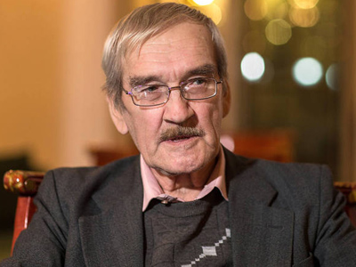

(Photo credit: RT)
On September 26th, 1983, the world was nearly destroyed by nuclear war. That day is Petrov Day, named for the man who averted it. Petrov Day is now a yearly event on September 26 commemorating the anniversary of the Petrov incident. Last year, Citadel, the Boston-area rationalist house, performed a ritual on Petrov day. We will be doing it again - and have published a revised version, for anyone else who wants to have a Petrov Day celebration themselves.
The purpose of the ritual is to make catastrophic and existential risk emotionally salient, by putting it into historical context and providing positive and negative examples of how it has been handled. This is not for the faint of heart and not for the uninitiated; it is aimed at those who already know what catastrophic and existential risk is, have some background knowledge of what those risks are, and believe (at least on an abstract level) that preventing those risks from coming to pass is important.
Petrov Day is designed for groups of 5-10 people, and consists of a series of readings and symbolic actions which people take turns doing. It is easy to organize; you'll need a few simple props (candles and a candle-holder) and a printout of the program for each person, but other than that no preparation is necessary.